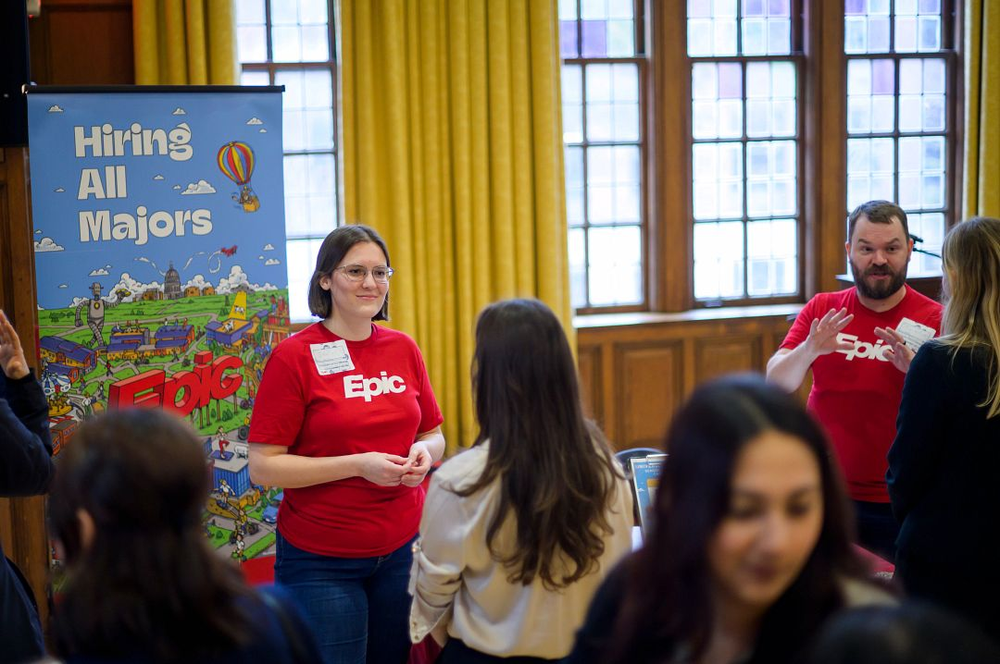

When you come to UMSI, you leave with a different resume.
You’ll be supported by a dedicated office that partners each year with more than 100 organizations — from the National Park Service to the Library of Congress.

Working with Clients in Courses
- Field Research in the Public Sector - SI 350
- Information Analytics Project - SI 485/495
- User Experience Final Project - SI 487/497
- Problem-Solving with People, Information, and Technology - SI 500
- Citizen Interaction Design - SI 538
- Engaging with Communities - SI 547
- Preserving Information Resources in a Digital Age - SI 581
- Needs Assessment and Usability Evaluation - SI 622
- Assessment in Cultural Institutions - SI 633
- Mastery User Experience Research and Design - SI 699
- User-Centered Agile Development - SI 699
- LAKES Mastery Course - SI 699
- Big Data Analytics - SI 699
Engaged Learning with Community Partners
Doing Research with Faculty Members
- Research Experience Development Program
- Independent Study
- Master's Thesis Option Program
- UMSI Teresa Noel Urban Blaurock Student Research Award